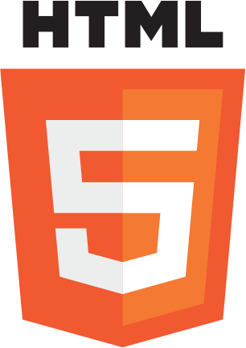
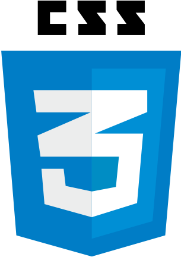
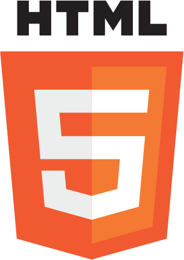
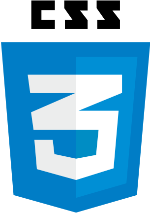
 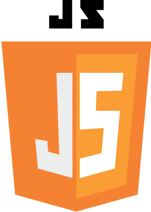
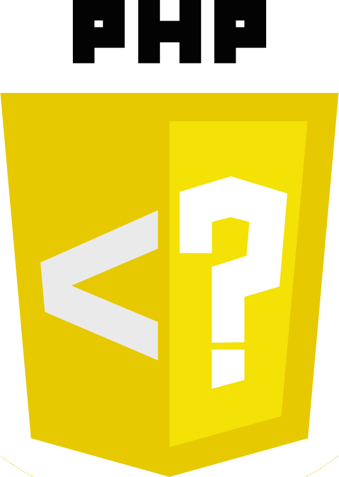
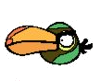
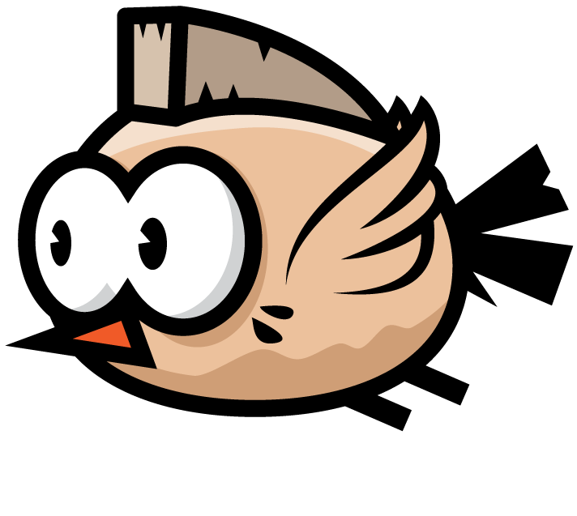
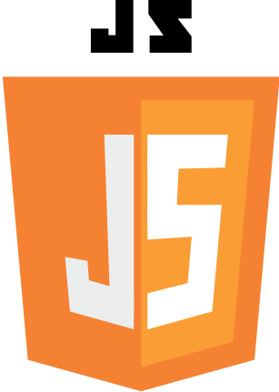
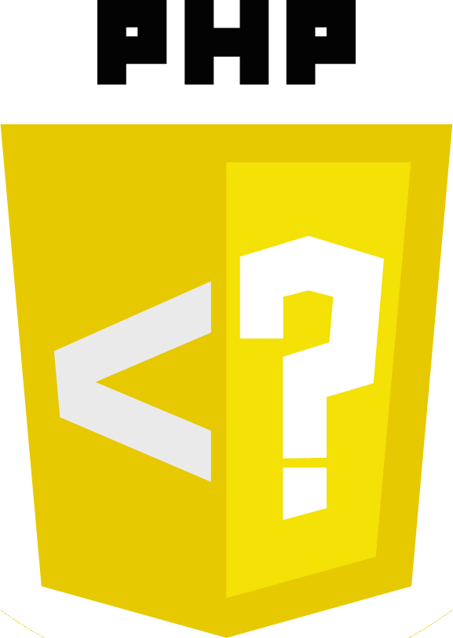
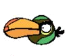
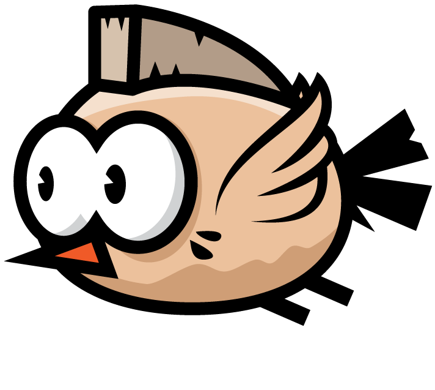

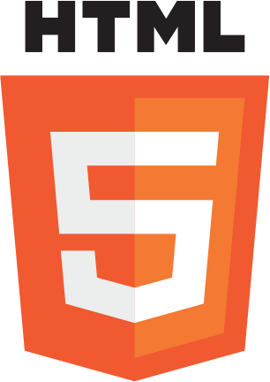
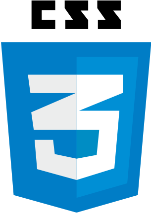
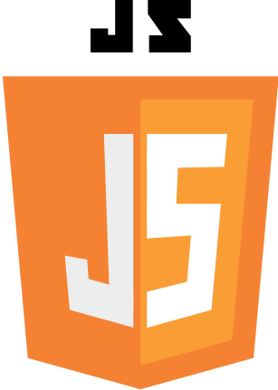
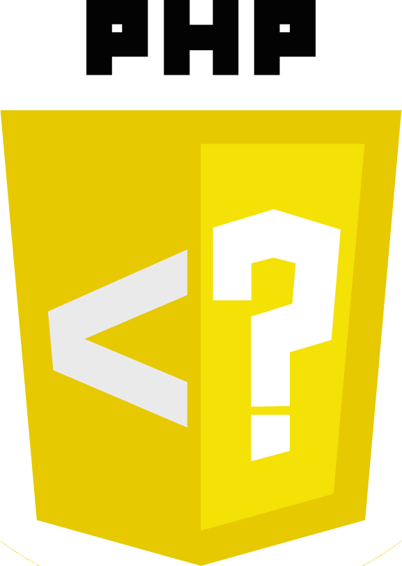
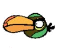
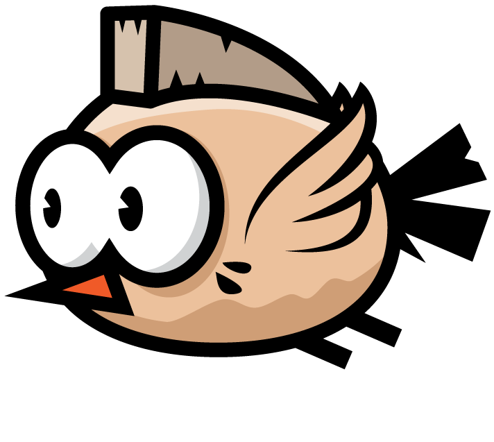
Bienvenue sur mon Jeux CV
Utilisez les fleches du clavier ( ) pour déplacer le personnage, évitez les arbres sur le chemin, récupérer les compétences et appuyer sur "Espace" pour tirer sur les oiseaux ennemis
) pour déplacer le personnage, évitez les arbres sur le chemin, récupérer les compétences et appuyer sur "Espace" pour tirer sur les oiseaux ennemis
Bac professionnel S.E.NBaccalauréat professionnel S.E.N (Systèmes électroniques numériques) Option : Télécom et Réseau au lycée Gustave Ferrié
BTS SIO SLAMBTS S.I.O (Services Informatiques aux Organisations) option SLAM(Solutions Logicielles et Applications Métiers) – ESIC Alternance Paris14
Développeur FullStack JSCertification niveau 2 Développeur FullStack JS IFOCOP
2016 à Aujourd'hui E-tagConception d'un chatbot pour un cabinet d'expertise comptable, connexion a l'API "siret info", création d'une base de données afin de trouver la correspondance des comptes dans le plan comptable
2016 - 2017 EngieExpert Hotline - Alternance 2 ans Gestion des incidents sur logiciel intranet, gestion et maintenance quotidienne du CRM SAP
2015 - 2016 GDF SuezConseiller Hotline - Alternance 2 ans Prise en charge d'incidents et de demandes d'assistance. Travail et assistance avec les conseillers